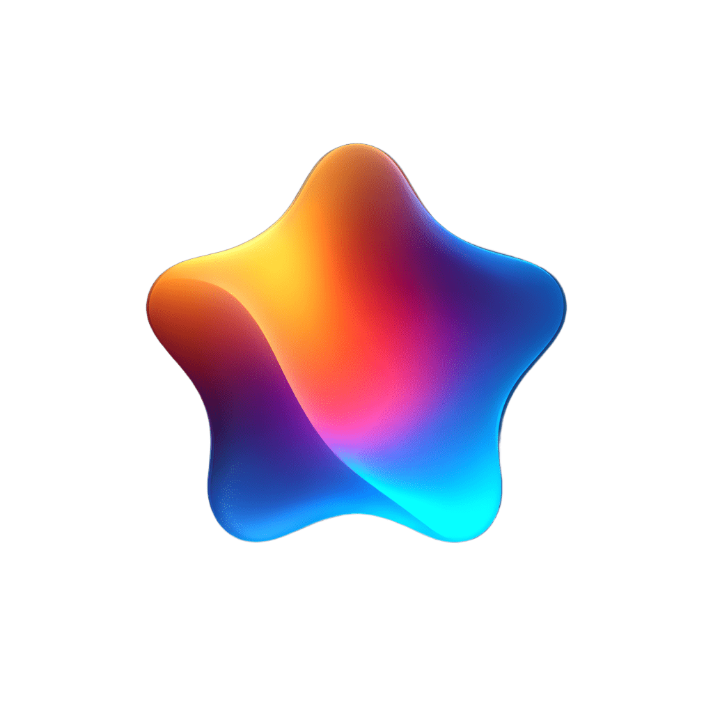

Native macOS · Menu barAll your AI usage,
in one menu bar.
AI Stats tracks quotas, limits, and spending across every AI account you use — Claude, ChatGPT, Codex, Cursor, Anthropic, OpenAI, Gemini — and keeps it all on your Mac.

Everything you need, nothing you don't.
AI Stats is built from the ground up for macOS. No dashboards to open, no web app to log in to, no account to create.
At a glance in your menu bar
A live progress indicator for the account that matters most, right next to your clock.

Every major AI service
Claude, ChatGPT, Codex, Cursor, Anthropic API, OpenAI API, Gemini — add as many accounts as you need.
WidgetKit widgets
Small, medium, and large widgets for your desktop and Notification Center. Always up to date.
Smart alerts
Native notifications when you cross 60%, 80%, or 90% of any quota — with configurable thresholds.
Labels & categories
Organize accounts by Work, Personal, Client — and see totals per category, not just per service.
100% on-device
No backend, no analytics, no telemetry. Your credentials live in the macOS Keychain — never ours.
See it in action.
Every surface — menu bar, widgets, dashboard, settings — is native SwiftUI and built to feel like a first-party macOS app.
Live progress, right next to the clock.
A single progress indicator for the account that matters most. Click it for the full popover with every quota, reset timer, and account status.
Deep-dive usage history.
Swift Charts powered line charts per account, range picker from 1 hour to 30 days, and a sidebar that groups accounts into the categories you set.

Desktop & Notification Center.
Small, medium, and large WidgetKit widgets. Pick an account to hero or let it rotate through all of them.

Sign in once, stay signed in.
Embedded WebView login for Claude, ChatGPT, Codex, Cursor. API key entry for Anthropic, OpenAI, Gemini. Your credentials never leave the Mac.

Tuned to the last pixel.
Notification thresholds, appearance, categories, menu bar style — all themed in the same glossy purple language as the rest of the app.

Zero data collection. Ever.
AI Stats doesn't have a server. There's no user account, no cloud sync, no analytics SDK. Every credential stays in your Keychain and every request goes straight from your Mac to the AI provider you chose.